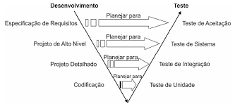

Este artigo apresenta uma análise comparativa de ferramentas de teste de software, destacando seu papel essencial na garantia da qualidade e confiabilidade no desenvolvimento de sistemas. A análise baseia-se na revisão de três artigos selecionados por meio de um processo de revisão sistemática, utilizando critérios de inclusão como relevância ao tema e rigor metodológico. Os resultados ressaltam a importância da automação na otimização de processos de teste repetitivos e na garantia de resultados consistentes. Além disso, o estudo enfatiza a relevância dos testes de unidade e de integração, ao mesmo tempo que aborda desafios como a cobertura insuficiente de testes não funcionais, especialmente em ambientes móveis e distribuídos. A conclusão reforça que a escolha das ferramentas de teste deve priorizar eficiência, flexibilidade e adaptabilidade às necessidades específicas do projeto, com a automação desempenhando um papel fundamental na manutenção da qualidade e estabilidade dos sistemas.
Os testes desempenham um papel crucial no desenvolvimento de software, garantindo a qualidade e a confiabilidade dos produtos finais. Em um cenário de crescente competitividade e demanda por software de alta qualidade, os testes são essenciais para identificar e corrigir falhas, assegurando que o software atenda às expectativas dos usuários e às especificações do projeto. Eles permitem detectar problemas precocemente, evitando impactos negativos na experiência do usuário e prejuízos significativos. No desenvolvimento ágil, onde mudanças são frequentes e o tempo de entrega é reduzido, os testes garantem que as alterações não causem regressões ou quebras no sistema, mantendo a qualidade e a estabilidade do software.( Sommerville,2011) De acordo com Ian Sommerville (2011, p. 63, Cap.8), "o objetivo dos testes de software é revelar a presença de defeitos. A citação é atribuída a Ian Sommerville em seu livro "Engenharia de Software". Nessa seção, Sommerville enfatiza que os testes são projetados para identificar a presença de defeitos, não para confirmar sua ausência. Não se destina a provar que não existem defeitos".Eles são responsáveis por identificar e corrigir falhas, garantindo que o software atenda às expectativas dos usuários e às especificações do projeto (DE SOUSA, 2019). Os testes s ão fundamentais para assegurar que o software funcione conforme o esperado e atenda aos requisitos de qualidade estabelecidos. Eles ajudam a identificar problemas precocemente, permitindo que sejam corrigidos antes que impactem negativamente a experiência do usuário ou causem prejuízos significativos. Além disso, os testes proporcionam uma maior confiança no software, tanto para os desenvolvedores quanto para os usuários finais (BARNUM, 2020). Em um ambiente ágil, onde as mudanças são frequentes e o tempo de entrega é reduzido, os testes garantem que as alterações introduzidas não causem regressões ou quebras no sistema. Eles permitem uma interação rápida e contínua do software, mantendo a qualidade e a estabilidade ao longo do processo de desenvolvimento (DE SOUSA, 2019). Adicionalmente, os testes são uma parte integrante das práticas de DevOps, que é a combinação de devlopment (desenvolvimento) e operations (operações), visando a integração contínua, entrega contínua e operação contínua de software. Eles fazem parte de um ciclo de feedback contínuo, onde as alterações no código são testadas e validadas automaticamente, garantindo uma entrega rápida e confiável do software (SPIRLANDELI e ROLAND, 2019). Apesar da existência de diversas ferramentas de teste, muitas exigências permanecem não atendidas. A falta de ferramentas apropriadas para administrar as atividades de teste é uma ocorrência frequente. Optar por ferramentas inapropriadas pode resultar em perda de tempo e afetar adversamente a eficácia do produto, principalmente se não puderem detectar os defeitos específicos (WEBER,2001). Neste contexto, é essencial realizar uma análise comparativa de ferramentas de teste que possam efetivamente contribuir para o processo de desenvolvimento, proporcionando economia de tempo, melhoria de desempenho e detecção mais eficaz de erros. Assim, este trabalho busca realizar uma revisão sistemática da literatura sobre o tema "comparação de ferramentas de apoio aos testes", com o objetivo de encontrar modelos de avaliação que possam auxiliar na escolha das ferramentas mais adequadas para uma organização. No entanto, diversas questões, como o tamanho da empresa, os modelos de processos de desenvolvimento e a cultura organizacional, não serão consideradas, pois o contexto em que a ferramenta é operacionalizada é complexo e difícil de ser analisado como um todo.
No contexto da engenharia de software, o teste de software é um processo vital que visa garantir a qualidade e a confiabilidade dos produtos desenvolvidos. Segundo Roger Pressman (2005) o teste de software envolve a execução de um programa com a intenção específica de encontrar erros, verificar a conformidade com os requisitos e assegurar que o software atende às expectativas dos usuários.Os principais objetivos dos testes de software são verificar se o software cumpre os requisitos especificados e identificar situações em que o comportamento do software é incorreto, indesejável ou não conforme as especificações. Para atingir esses objetivos, os testes são realizados em diferentes níveis, como testes de unidade, testes de integração, testes de sistema e testes de aceitação, como demonstrado na figura abaixo.
Agradecimentos: Primeiramente, gostaria de expressar minha imensa gratidão a Deus, cuja presença inabalável foi a luz que guiou cada passo desta jornada acadêmica. Sua orientação divina, força inspiradora e misericórdia infinita foram o alicerce sobre o qual este trabalho foi construído. Sem Sua graça, nada seria possível. Em seguida, dedico um profundo agradecimento aos meus queridos avós, cujo amor e cuidado foram verdadeiros pilares em minha vida. Que Deus os abençoe abundantemente por todo o carinho, dedicação e sacrifício que sempre ofereceram generosamente. Este trabalho é também uma homenagem ao amor incondicional e ao suporte que vocês compartilharam ao longo dos anos. Muito obrigado por tudo. Por fim, deixo meu sincero agradecimento ao meu orientador, cuja orientação, paciência e conhecimentos foram fundamentais para a realização deste trabalho. Suas valiosas contribuições não apenas enriqueceram este projeto, mas também inspiraram meu crescimento pessoal e acadêmico. Muito obrigado por todo o suporte durante essa jornada.
Milena Cezar, 2025